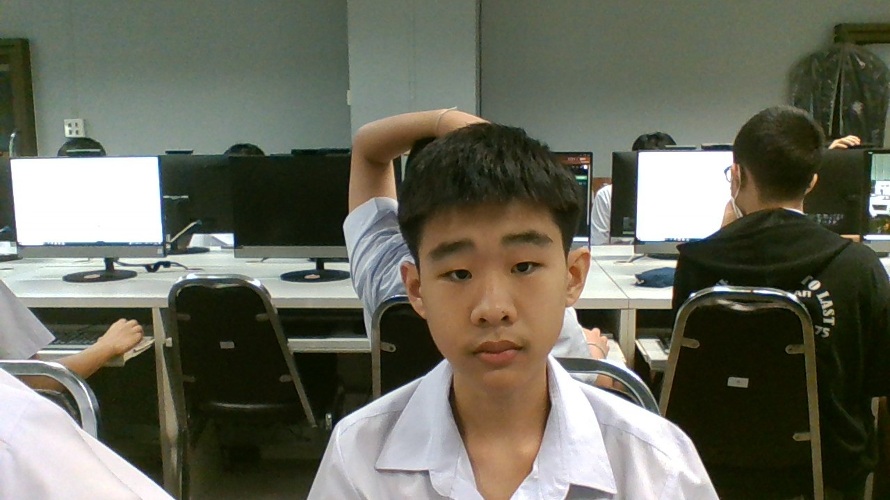

ครูในความทรงจำ...ที่ไม่ลืมเลือน 2568🥀🥀🥀
นายสุวิทย์ งามผักแว่น : ขอบคุณที่ครูคอยดูแลผมตอนม.1 และคอยเตือนอะไรที่ไม่ดีมาตลอดนะครับ
บทเพลงสำหรับครู
<br><br> <img src="https://lh6.googleusercontent.com/FNMDaVWJLFkK_PylXp51szjJKkf1460xjPxMYdffnoLa1MAlZvxWSuEUQpAW5LllM7rZHOY3hqHr-GBswN9as7Y64XDCzt-Rs0I1JyVULofPM-h7xiDp18IbrOLJ0C6CvDYF4yZKCeA5mb3BjHfQxFP6ttYwbgJtLkeiVuopTyUZGoJzsbHlGw=w1280"width=250 height=250> <br><br> น.ส.ธัญวรินทร์ ฟั่นคุ้ม : ขอบคุณที่สอนคณิตให้เข้าใจมากขึ้นและดูแลผมตอนม.1นะครับ <br><br> <b>บทเพลงสำหรับครู</b> <br><br> <iframe width="300" height="300" src="https://www.youtube.com/embed/X7sT-sXQ47Y" title="เพลงคณิตศาสตร์ HD" frameborder="0" allow="accelerometer; autoplay; clipboard-write; encrypted-media; gyroscope; picture-in-picture; web-share" referrerpolicy="strict-origin-when-cross-origin" allowfullscreen>
นายนัชชา ยืนยงอนันต์ : ขอบคุณที่สอนภาษาENGLISHให้และไม่น่าเบื่อนะครับ
เพลงสำหรับครู

จัดทำโดย : เด็กชายปัญญวัฒน์ พงศ์โสภณธนชิน 213 เลขที่6